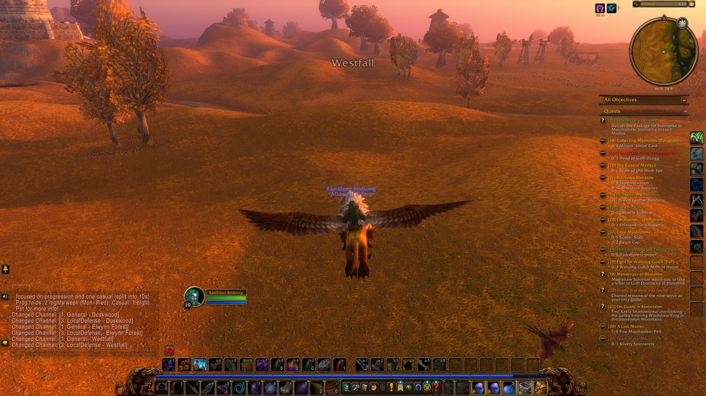
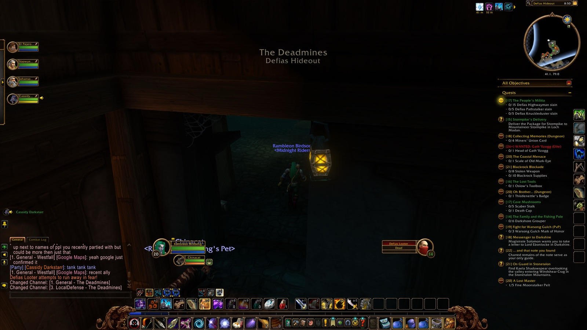
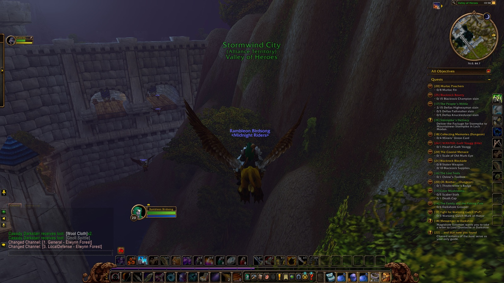
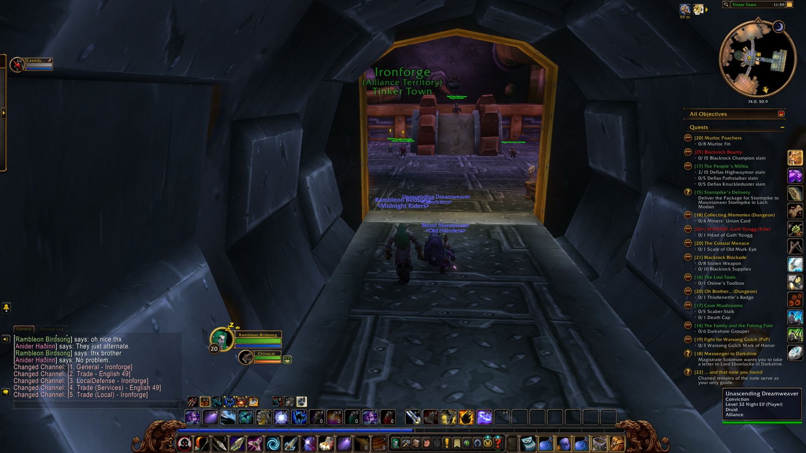
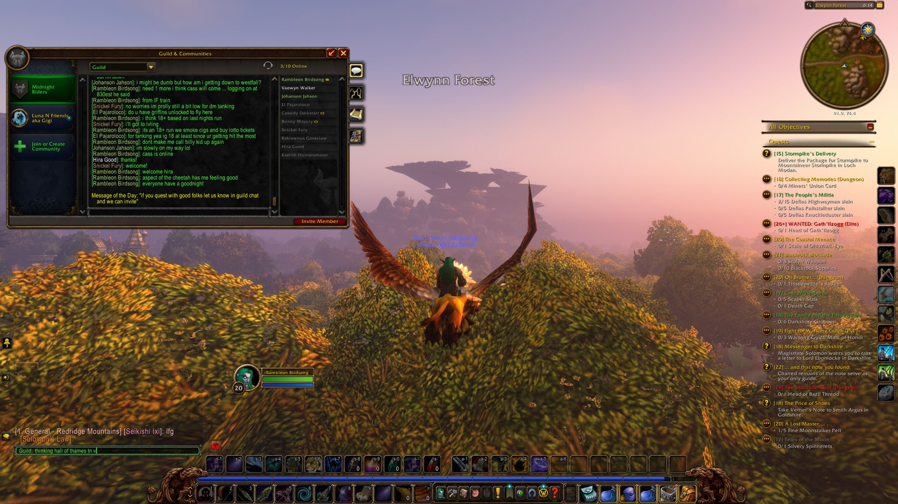
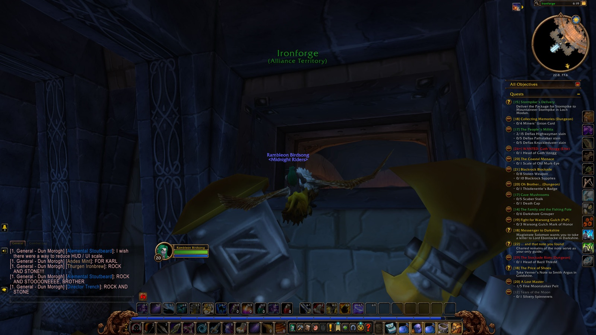
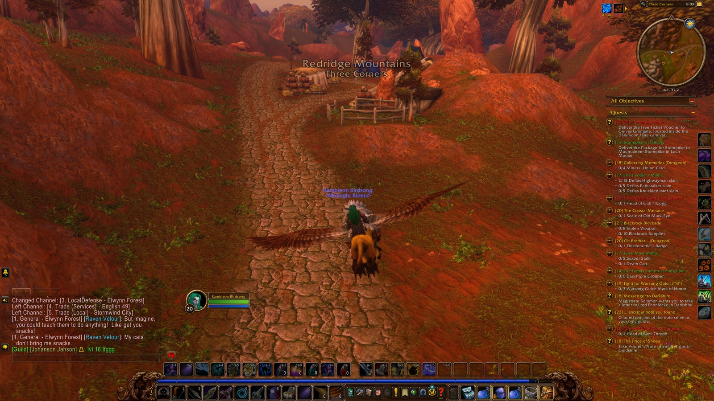
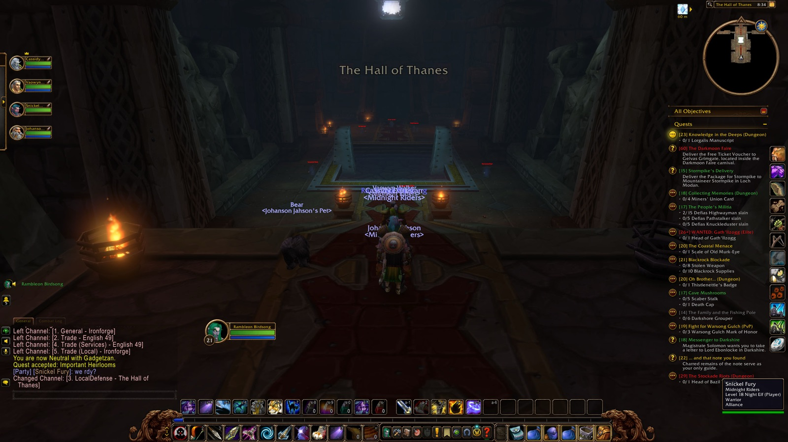
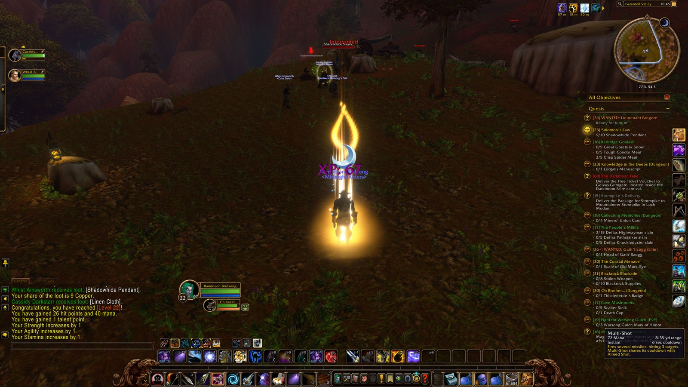

Rambleon Birdsong's road, one stretch at a time. Not the best route; his route.
1DarkshoreLevel 14–15
Auberdine · The Long Wash · Mist's Edge · The Veiled Sea · Bashal'Aran · Cliffspring River · Tower of Althalaxx · Twilight Vale · Ameth'Aran · Wildbend River · Grove of the Ancients · passing through Stormwind City
From Chapter 1 — Cut-Throat Alley · November 7, 2026 · 5h 26m

- Picked up
- The Fragments Within, WANTED: Murkdeep!, Fruit of the Sea, The Absent Minded Prospector, The Blackwood Corrupted, Buzzbox 525, The Tower of Althalaxx ×2, Tharnariun's Hope, The Fall of Ameth'Aran
- Turned in
- As Water Cascades (level 14), The Fragments Within (Auberdine, level 15), Buzzbox 323 (Cliffspring River, level 15), The Tower of Althalaxx ×2 (level 15), Cleansing of the Infected (Auberdine, level 15), Grove of the Ancients (Grove of the Ancients, level 15)
- Reached
- level 15 (Auberdine)
- First met in combat
- Raging Moonkin, Moonkin, Rabid Thistle Bear, Thistle Bear, Moonstalker, Dark Strand Fanatic, Writhing Highborne
- Loot worth keeping
- Ancestral Woollies (Uncommon), Curvewood Dagger (Uncommon), Fine Shortbow (Uncommon), War Torn Tunic of Spirit (Uncommon)
- Deaths
- 7 (Darkshore, Tower of Althalaxx · Moonstalker, Delmanis the Hated, Dark Strand Fanatic)
- Company
- Steez, Deadeye
2AshenvaleLevel 15
Maestra's Post · Astranaar
From Chapter 1 — Cut-Throat Alley · November 7, 2026 · 3h 29m

- Picked up
- The Tower of Althalaxx, The Zoram Strand
- Turned in
- The Tower of Althalaxx (Maestra's Post, level 15)
3DarkshoreLevel 15–16
Twilight Vale · Twilight Shore · The Long Wash · Auberdine · Bashal'Aran · Cliffspring River · Mist's Edge · Ameth'Aran · Wildbend River · The Master's Glaive · Remtravel's Excavation
From Chapter 1 — Cut-Throat Alley · November 7, 2026 · 1h 29m

- Picked up
- Beached Sea Turtle ×3, Beached Sea Creature ×2
- Turned in
- Tharnariun's Hope (Auberdine, level 16), The Blackwood Corrupted (Auberdine, level 16), Beached Sea Turtle (Auberdine, level 16), The Fall of Ameth'Aran (Twilight Vale, level 16), The Absent Minded Prospector (Remtravel's Excavation, level 16)
- Reached
- level 16 (Mist's Edge)
- First met in combat
- Thistle Bear, Rabid Thistle Bear, Thistle Cub, Den Mother, Moonstalker, Reef Crawler, Greymist Warrior, Wailing Highborne, Writhing Highborne, Grizzled Thistle Bear, Cracked Golem, Stone Behemoth
- Loot worth keeping
- Barbaric Battle Axe of Agility (Uncommon), Timberland Cape (Uncommon), Wildkeeper Leggings (Uncommon), Short Bastard Sword of Fire Protection (Uncommon), Barbaric Cloth Gloves (Uncommon), Runic Stave (Uncommon)
- Company
- Warlight, Cassidy, Vaowyn, Moderate, Longbranch, Seler
4AshenvaleLevel 16
The Zoram Strand
From Chapter 1 — Cut-Throat Alley · November 7, 2026 · 38m
- First met in combat
- Wrathtail Razortail, Mystlash Hydra, Wrathtail Sorceress, Wrathtail Wave Rider
- Loot worth keeping
- Grunt's Belt of the Tiger (Uncommon), War Paint Legguards (Uncommon)
- Company
- El
5DarkshoreLevel 16–17
Auberdine · The Long Wash · Twilight Shore
From Chapter 1 — Cut-Throat Alley · November 7, 2026 · 3m

- Turned in
- Beached Sea Creature ×2 (Auberdine, level 17), Beached Sea Turtle ×2 (Auberdine, level 16), WANTED: Murkdeep! (Auberdine, level 17)
- Reached
- level 17 (Auberdine)
- Loot worth keeping
- Ridgeback Bracers (Uncommon)
6AshenvaleLevel 17
The Zoram Strand · Lake Falathim · The Shrine of Aessina · Astranaar · Maestra's Post
From Chapter 1 — Cut-Throat Alley · November 7, 2026 · 4m
- Picked up
- On Guard in Stonetalon
- Turned in
- The Zoram Strand (Astranaar, level 17)
7DarkshoreLevel 17
Twilight Vale · Twilight Shore · The Long Wash · Auberdine · Mist's Edge
From Chapter 1 — Cut-Throat Alley · November 7, 2026 · 51m
- Picked up
- Beached Sea Creature
- Turned in
- Deep Ocean, Vast Sea (Auberdine, level 17), Beached Sea Creature (Auberdine, level 17)
- First met in combat
- Greymist Seer, Greymist Coastrunner
- Loot worth keeping
- Lupine Cord of the Wolf (Uncommon), Murloc-hide Gloves (Uncommon)
- Deaths
- 2 (Mist's Edge · Greymist Coastrunner, drowning)
8AshenvaleLevel 17
The Zoram Strand · Lake Falathim · The Shrine of Aessina · Astranaar · Maestra's Post · The Ruins of Ordil'Aran · Bathran's Haunt · Fire Scar Shrine · passing through Darkshore
From Chapter 1 — Cut-Throat Alley · November 7, 2026 · 1h 19m
- Picked up
- The Tower of Althalaxx ×2
- Turned in
- The Tower of Althalaxx ×2 (Maestra's Post, level 17)
- First met in combat
- Dark Strand Adept, Voidwalker Minion, Dark Strand Excavator, Dark Strand Cultist, Dark Strand Enforcer, Ghostpaw Runner, Felslayer, Lesser Felguard, Succubus Minion, Ilkrud Magthrull, Wildthorn Stalker, Dark Strand Assassin
- Loot worth keeping
- Clergy Ring (Uncommon)
- Deaths
- 3 (The Ruins of Ordil'Aran · Voidwalker Minion, Dark Strand Adept)
- Company
- Chocolate, Assymptom
9Stormwind CityLevel 17
Stormwind Harbor · The Canals · Trade District · Dwarven District · Cut-Throat Alley · passing through Darkshore
From Chapter 1 — Cut-Throat Alley, Chapter 2 — Alther's Mill · November 7, 2026 – November 8, 2026 · 50m

- Picked up
- Oh Brother..., Collecting Memories, Underground Assault, Trek to Ashenvale
10AshenvaleLevel 17
The Zoram Strand · Lake Falathim · The Shrine of Aessina · Astranaar · Maestra's Post
From Chapter 2 — Alther's Mill · November 8, 2026 · 3m

- Turned in
- Trek to Ashenvale (Astranaar, level 17)
11DarkshoreLevel 17–18
Twilight Vale · Twilight Shore · The Long Wash · Auberdine · The Master's Glaive · Grove of the Ancients · Mist's Edge · The Veiled Sea · passing through Ashenvale, Stormwind City, Elwynn Forest
From Chapter 2 — Alther's Mill · November 8, 2026 · 1h 10m

- Picked up
- Beached Sea Turtle, Beached Sea Creature
- Turned in
- Buzzbox 525 (Twilight Vale, level 18), Fruit of the Sea (Auberdine, level 18), Beached Sea Turtle (Auberdine, level 18), Beached Sea Creature (Auberdine, level 18)
- Reached
- level 18 (Grove of the Ancients)
- First met in combat
- Greymist Coastrunner, Greymist Seer, Greymist Netter, Reef Crawler, Moonstalker Matriarch, Moonstalker Runt, Moonstalker Sire, Grizzled Thistle Bear, Blackwood Ursa, Blackwood Tracker
- Loot worth keeping
- Feral Bindings of the Monkey (Uncommon), Moss Agate (Uncommon), Shucking Gloves (Uncommon)
- Deaths
- 1 (Twilight Vale · Giant Foreststrider)
12WestfallLevel 18
The Jansen Stead · Sentinel Hill · Sentinel Tower · Saldean's Farm · Furlbrow's Pumpkin Farm · Longshore · Jangolode Mine · The Molsen Farm · Gold Coast Quarry · Alexston Farmstead · Stendel's Pond · Moonbrook · passing through Elwynn Forest
From Chapter 2 — Alther's Mill · November 8, 2026 · 4h 56m

- Picked up
- Red Leather Bandanas, The Defias Brotherhood, The People's Militia ×2, Patrolling Westfall, ... and that note you found, Humble Beginnings
- Turned in
- Patrolling Westfall (Sentinel Tower, level 18), The People's Militia (Sentinel Tower, level 18)
- First met in combat
- Harvest Watcher, Defias Trapper, Fleshripper, Defias Pillager, Riverpaw Herbalist, Riverpaw Mongrel, Riverpaw Miner, Defias Looter, Defias Messenger
- Loot worth keeping
- Pioneer Trousers of Agility (Uncommon), Riverpaw Leather Vest (Uncommon), Hunting Pants (Uncommon), Tigerseye (Uncommon)
- Deaths
- 4 (Gold Coast Quarry, Alexston Farmstead · Defias Looter, Riverpaw Mongrel, Defias Pathstalker)
- Company
- Cassidy
13Redridge MountainsLevel 18
Three Corners · Lake Everstill · Lakeshire · passing through Duskwood, Elwynn Forest
From Chapter 2 — Alther's Mill · November 8, 2026 · 11m

- Picked up
- Encroaching Gnolls, Assessing the Threat, Show of Force, Blackrock Menace, Blackrock Blockade, The Lost Tools, The Price of Shoes, WANTED: Gath'Ilzogg, WANTED: Incinerator Gar'im, Solomon's Law, Messenger to Stormwind, Selling Fish, WANTED: Lieutenant Fangore, Dry Times, A Free Lunch, The Defias Brotherhood, An Unwelcome Guest, Redridge Goulash, Hilary's Necklace
- Turned in
- Encroaching Gnolls (level 18), The Defias Brotherhood (Lakeshire, level 18)
14WestfallLevel 18
Sentinel Hill · Sentinel Tower · Saldean's Farm · passing through Duskwood, Elwynn Forest
From Chapter 2 — Alther's Mill · November 8, 2026 · 2m
- Picked up
- The Defias Brotherhood
- Turned in
- The Defias Brotherhood (Sentinel Tower, level 18)
15Stormwind CityLevel 18
Valley of Heroes · Trade District · The Canals · Old Town · SI:7 · Cathedral Square · passing through Elwynn Forest
From Chapter 2 — Alther's Mill · November 8, 2026 · 8m

- Picked up
- The Defias Brotherhood, Messenger to Stormwind
- Turned in
- The Defias Brotherhood (SI:7, level 18), Humble Beginnings (Cathedral Square, level 18), Messenger to Stormwind (Valley of Heroes, level 18)
16Redridge MountainsLevel 18
Three Corners · Lake Everstill · Lakeshire · passing through Duskwood, Elwynn Forest
From Chapter 2 — Alther's Mill · November 8, 2026 · 7m
- Picked up
- Visit the Herbalist, Messenger to Westfall, Delivering Daffodils
- Turned in
- A Free Lunch (Three Corners, level 18), Messenger to Stormwind (Lakeshire, level 18), Visit the Herbalist (Lakeshire, level 18), Delivering Daffodils (Lakeshire, level 18)
17WestfallLevel 18–19
Sentinel Hill · Sentinel Tower · Stendel's Pond · Moonbrook · The Dagger Hills
From Chapter 2 — Alther's Mill · November 8, 2026 · 4h 09m

- Picked up
- The Defias Brotherhood, Messenger to Westfall, The Coastal Menace
- Turned in
- The Defias Brotherhood ×2 (Sentinel Tower, level 18), Messenger to Westfall (Sentinel Tower, level 18)
- Reached
- level 19 (Sentinel Tower)
- First met in combat
- Defias Pillager, Defias Messenger, Riverpaw Bandit, Defias Looter, Defias Henchman, Defias Digger
- Loot worth keeping
- Tigerseye (Uncommon), Nomad Tunic of the Falcon (Uncommon)
- Company
- Cassidy, Ciel, Angelique, Vaowyn, El, Ityrandel, Billy
18The DeadminesLevel 19
Defias Hideout · Mast Room · Goblin Foundry · Ironclad Cove · passing through Westfall, Duskwood, Elwynn Forest
From Chapter 2 — Alther's Mill · November 8, 2026 · 1h 33m

- Picked up
- The Unsent Letter, Thunderbrew
- First met in combat
- Defias Miner, Defias Overseer, Defias Evoker, Rhahk'Zor, Defias Watchman, Goblin Woodcarver, Sneed, Sneed's Shredder, Defias Strip Miner, Defias Taskmaster, Goblin Craftsman, Goblin Engineer
- Loot worth keeping
- Seer's Cape (Uncommon), Woodworking Gloves (Uncommon), Dull Sawblade (Rare), Shadowgem (Uncommon), Inscribed Leather Breastplate (Uncommon), Meadow Ring of the Eagle (Uncommon), Lavishly Jeweled Ring (Rare), Militant Shortsword of the Falcon (Uncommon), Bandit Bracers of the Falcon (Uncommon), First Mate Band (Rare)
- Deaths
- 3 (Goblin Foundry, Ironclad Cove)
- Instances
- Deadmines
- Bosses defeated
- Rhahk'Zor, Sneed, Gilnid, Mr. Smite, Captain Greenskin, Edwin VanCleef, Cookie
19Stormwind CityLevel 19
Valley of Heroes · Trade District · The Canals · Cathedral Square · Dwarven District · passing through Elwynn Forest
From Chapter 2 — Alther's Mill · November 8, 2026 · 11m

- Picked up
- Bazil Thredd, The Stockade Riots
- Turned in
- The Unsent Letter (Cathedral Square, level 19), Underground Assault (Dwarven District, level 19), Bazil Thredd (level 19)
- Loot worth keeping
- Bravo's Armbands (Uncommon)
20Redridge MountainsLevel 19
Three Corners · Lake Everstill · Lakeshire · Lakeridge Highway · Redridge Canyons · Rethban Caverns · Alther's Mill · passing through Duskwood, Elwynn Forest
From Chapter 2 — Alther's Mill, Chapter 3 — The Great Forge · November 8, 2026 – November 9, 2026 · 49m

- Picked up
- Messenger to Darkshire
- Turned in
- Messenger to Westfall (Lakeshire, level 19), Show of Force (level 19)
- First met in combat
- Tarantula, Redridge Thrasher, Redridge Mongrel, Redridge Brute, Black Dragon Whelp, Blackrock Grunt, Blackrock Outrunner, Greater Tarantula, Dire Condor
- Deaths
- 1 (Three Corners · Redridge Thrasher)
21WestfallLevel 19–20
Sentinel Hill · Moonbrook · Stendel's Pond · Sentinel Tower
From Chapter 3 — The Great Forge · November 9, 2026 · 27m

- Picked up
- The People's Militia
- Turned in
- Red Leather Bandanas (Sentinel Hill, level 19), The People's Militia (Sentinel Tower, level 20)
- Reached
- level 20 (Sentinel Tower)
- First met in combat
- Greater Fleshripper, Defias Pillager, Defias Looter
- Loot worth keeping
- Cloak of the People's Militia (Uncommon)
- Company
- Johanson, Vaowyn, El, Zolton, Cassidy
22The DeadminesLevel 20
Defias Hideout · Mast Room · Goblin Foundry · Ironclad Cove · passing through Westfall
From Chapter 3 — The Great Forge · November 9, 2026 · 1h 37m

- First met in combat
- Defias Worker, Defias Miner, Defias Overseer, Defias Evoker, Defias Strip Miner, Rhahk'Zor, Defias Watchman (elite), Goblin Woodcarver, Sneed, Sneed's Shredder, Defias Taskmaster, Defias Wizard
- Loot worth keeping
- Willow Robe of Agility (Uncommon), Pattern: Brawler's Leather Armor (Rare), Light Bow (Uncommon), Gleaming Claymore of Healing (Uncommon), Merc Sword of the Boar (Uncommon), Taskmaster Axe (Rare), Blackened Defias Leggings (Rare), Raider's Boots of Shadow Protection (Uncommon), Soldier's Armor of Strength (Uncommon), Smelting Pants (Rare)
- Deaths
- 3 (Goblin Foundry, Ironclad Cove)
- Instances
- Deadmines
- Bosses defeated
- Rhahk'Zor, Sneed, Gilnid, Mr. Smite, Captain Greenskin, Edwin VanCleef, Cookie
23WestfallLevel 20
The Dagger Hills · Sentinel Hill · passing through Duskwood, Elwynn Forest
From Chapter 3 — The Great Forge · November 9, 2026 · 4m
- First met in combat
- Defias Highwayman
- Deaths
- 1 (The Dagger Hills · Defias Highwayman)
24Redridge MountainsLevel 20
Three Corners · Lake Everstill · Lakeshire · passing through Elwynn Forest
From Chapter 3 — The Great Forge · November 9, 2026 · 24m
- Picked up
- Blackrock Bounty, Murloc Poachers
- Turned in
- An Unwelcome Guest (Lakeshire, level 20)
- First met in combat
- Bellygrub, Great Goretusk
25Stormwind CityLevel 20
Valley of Heroes · Trade District · The Canals · Dwarven District · Cathedral Square · Cathedral of Light · Stormwind Keep · Royal Library · passing through Deeprun Tram
From Chapter 3 — The Great Forge · November 9, 2026 · 1h 01m

- Picked up
- Gyrodrillmatic Excavationators, Speaking of Fortitude, Tinkmaster Overspark, Brother Paxton, Claiming Arathi Basin
- Turned in
- Speaking of Fortitude (Royal Library, level 20)
26IronforgeLevel 20
Tinker Town · The Military Ward · The Great Forge
From Chapter 3 — The Great Forge · November 9, 2026 · 2m

- Picked up
- Save Techbot's Brain!, Find Bingles, The Day After
- Turned in
- Tinkmaster Overspark (Tinker Town, level 20)
27Redridge MountainsLevel 20
Lakeshire · Lake Everstill · Three Corners · passing through Elwynn Forest, Stormwind City, Burning Steppes, Searing Gorge, Dun Morogh
From Chapter 3 — The Great Forge, Chapter 4 — Trade District · November 9, 2026 – November 10, 2026 · 2h 41m

- Picked up
- The Everstill Bridge
- Turned in
- The Lost Tools (Lakeshire, level 20), Selling Fish (Lakeshire, level 20), Murloc Poachers (Lakeshire, level 20)
- First met in combat
- Murloc Flesheater, Murloc Scout
- Loot worth keeping
- Dwarven Fishing Pole (Uncommon)
- Deaths
- 1 (Lake Everstill · Murloc Flesheater)
28IronforgeLevel 20
The Great Forge · The Military Ward · Vault of Ironforge · The High Seat · passing through Dun Morogh, Searing Gorge, Burning Steppes, Elwynn Forest, Stormwind City
From Chapter 4 — Trade District · November 10, 2026 · 1h 42m

- Picked up
- The Darkmoon Faire
29Redridge MountainsLevel 20–21
Three Corners · Lakeridge Highway · passing through Elwynn Forest, Stormwind City, Burning Steppes, Searing Gorge, Dun Morogh
From Chapter 4 — Trade District · November 10, 2026 · 14m

- Turned in
- Assessing the Threat (level 20)
- Reached
- level 21 (Redridge Mountains)
- First met in combat
- Redridge Poacher, Redridge Mongrel, Redridge Thrasher
- Company
- Cassidy, Vaowyn, Johanson, Snickel
30IronforgeLevel 21
The Great Forge · The High Seat · Hall of Explorers · The Forlorn Cavern · The Mystic Ward · passing through Dun Morogh
From Chapter 4 — Trade District · November 10, 2026 · 16m
- Picked up
- Knowledge in the Deeps, The Restless Dead, Important Heirlooms
- Deaths
- 1 (Ironforge)
- Instances
- The Hall of Thanes
31The Hall of ThanesLevel 21
Anvilmar's Rest · Dark Iron Ingress · Reliquary of Kings
From Chapter 4 — Trade District · November 10, 2026 · 32m

- Picked up
- An Ancient Grudge, The Treaty of Understanding
- Turned in
- An Ancient Grudge (level 21)
- First met in combat
- Faldrim Anvilmar, Bloodhound Runt, Dark Iron Looter, Dark Iron Engineer, Dark Iron Summoner, Magmatus, Fiery Assistant, Plunder, Lesser Stone Golem, Durgen Dirgehammer
- Loot worth keeping
- Deepgrave Trousers (Uncommon), Nomad Trousers of Agility (Uncommon)
- Bosses defeated
- Faldrim Anvilmar, Infurnus, Plunder, Durgen Dirgehammer
32IronforgeLevel 21
The High Seat · The Great Forge · Vault of Ironforge · passing through Dun Morogh, Searing Gorge, Burning Steppes, Elwynn Forest, Stormwind City
From Chapter 4 — Trade District · November 10, 2026 · 13m
- Turned in
- Important Heirlooms (level 21), The Restless Dead (level 21), The Treaty of Understanding (The High Seat, level 21)
- Loot worth keeping
- Dwarven Tome (Uncommon), Dusty Belt (Uncommon)
33Redridge MountainsLevel 21–22
Three Corners · Lake Everstill · Lakeshire · Redridge Canyons · Lakeridge Highway · Alther's Mill · Stonewatch Tower · Stonewatch · Galardell Valley · Tower of Ilgalar · Stonewatch Falls · Stonewatch Keep
From Chapter 4 — Trade District · November 10, 2026 · 2h 13m

- Picked up
- Alther's Mill, What Comes Around...
- Turned in
- The Everstill Bridge (Lakeshire, level 21), Hilary's Necklace (Lake Everstill, level 21), Alther's Mill (Lakeshire, level 21), Solomon's Law (Lakeshire, level 22), WANTED: Lieutenant Fangore (Lakeshire, level 22), Blackrock Menace (Lakeshire, level 22)
- Reached
- level 22 (Galardell Valley)
- First met in combat
- Redridge Mystic, Redridge Brute, Black Dragon Whelp, Great Goretusk, Murloc Minor Tidecaller, Blackrock Grunt, Dire Condor, Greater Tarantula, Shadowhide Brute, Shadowhide Gnoll, Rabid Shadowhide Gnoll, Shadowhide Warrior
- Loot worth keeping
- Smith's Trousers (Uncommon), Shadowhide Mace (Uncommon), Defender Girdle of Defense (Uncommon), Short Ash Bow (Uncommon)
- Deaths
- 4 (Galardell Valley, Stonewatch Keep, Stonewatch · Rabid Shadowhide Gnoll, Blackrock Sentry (elite), Gath'Ilzogg (elite))
- Company
- Magus, Avanta, Whist, Thaddeus, Benny, Jirallis
34Elwynn ForestLevel 22
Goldshire · Northshire Valley · Main Hall · Library Wing · Hall of Arms · passing through Stormwind City
From Chapter 4 — Trade District · November 10, 2026 · 17m
- Picked up
- Return to Verner, Ink Supplies
- Turned in
- The Darkmoon Faire (Goldshire, level 22), The Price of Shoes (Goldshire, level 22), Brother Paxton (Library Wing, level 22)
35Redridge MountainsLevel 22
Three Corners · Lake Everstill · Lakeshire
From Chapter 4 — Trade District · November 10, 2026 · 1m
- Picked up
- Rethban Ore, A Baying of Gnolls, Underbelly Scales
- Turned in
- Ink Supplies (Lakeshire, level 22), Return to Verner (Lakeshire, level 22)